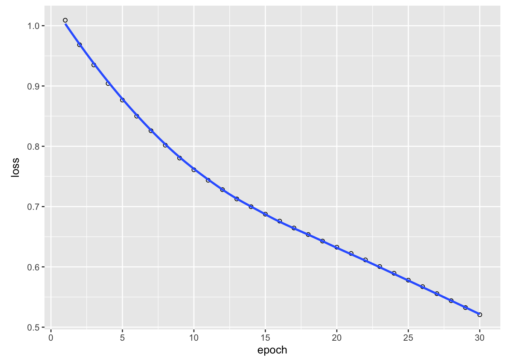

library(keras3)
Attaching package: 'keras3'The following objects are masked from 'package:tensorflow':
set_random_seed, shape# or library(torch)We can use TensorFlow directly from R (see Appendix B for an introduction to TensorFlow), and we could use this knowledge to implement a neural network in TensorFlow directly in R. However, this can be quite cumbersome. For simple problems, it is usually faster to use a higher-level API that helps us implement the machine learning models in TensorFlow. The most common of these is Keras.
Keras is a powerful framework for building and training neural networks with just a few lines of code. As of the end of 2018, Keras and TensorFlow are fully interoperable, allowing us to take advantage of the best of both.
The goal of this lesson is to familiarize you with Keras. If you have TensorFlow installed, you can find Keras inside TensorFlow: tf.keras. However, the RStudio team has built an R package on top of tf.keras that is more convenient to use. To load the Keras package, type
library(keras3)
Attaching package: 'keras3'The following objects are masked from 'package:tensorflow':
set_random_seed, shape# or library(torch)We build a small classifier to predict the three species of the iris data set. Load the necessary packages and data sets:
library(keras3)
library(tensorflow)
library(torch)
Attaching package: 'torch'The following object is masked from 'package:keras3':
as_iteratordata(iris)
head(iris) Sepal.Length Sepal.Width Petal.Length Petal.Width Species
1 5.1 3.5 1.4 0.2 setosa
2 4.9 3.0 1.4 0.2 setosa
3 4.7 3.2 1.3 0.2 setosa
4 4.6 3.1 1.5 0.2 setosa
5 5.0 3.6 1.4 0.2 setosa
6 5.4 3.9 1.7 0.4 setosaFor neural networks, it is beneficial to scale the predictors (scaling = centering and standardization, see ?scale). We also split our data into predictors (X) and response (Y = the three species).
X = scale(iris[,1:4])
Y = iris[,5]Additionally, Keras/TensorFlow cannot handle factors and we have to create contrasts (one-hot encoding). To do so, we have to specify the number of categories. This can be tricky for a beginner, because in other programming languages like Python and C++, arrays start at zero. Thus, when we would specify 3 as number of classes for our three species, we would have the classes 0,1,2,3. Keep this in mind.
Y = keras3::to_categorical(as.integer(Y) - 1L, 3)
head(Y) # 3 columns, one for each level of the response. [,1] [,2] [,3]
[1,] 1 0 0
[2,] 1 0 0
[3,] 1 0 0
[4,] 1 0 0
[5,] 1 0 0
[6,] 1 0 0After having prepared the data, we start now with the typical workflow in keras.
1. Initialize a sequential model in Keras:
model = keras_model_sequential(shape(4L))Torch users can skip this step.
A sequential Keras model is a higher order type of model within Keras and consists of one input and one output model.
2. Add hidden layers to the model (we will learn more about hidden layers during the next days).
When specifying the hidden layers, we also have to specify the shape and a so called activation function. You can think of the activation function as decision for what is forwarded to the next neuron (but we will learn more about it later). If you want to know this topic in even more depth, consider watching the videos presented in section @ref(basicMath).
The shape of the input is the number of predictors (here 4) and the shape of the output is the number of classes (here 3).
model |>
layer_dense(units = 20L, activation = "relu") |>
layer_dense(units = 20L, activation = "relu") |>
layer_dense(units = 20L, activation = "relu") |>
layer_dense(units = 3L, activation = "softmax") The Torch syntax is very similar, we will give a list of layers to the “nn_sequential” function. Here, we have to specify the softmax activation function as an extra layer:
model_torch =
nn_sequential(
nn_linear(4L, 20L),
nn_linear(20L, 20L),
nn_linear(20L, 20L),
nn_linear(20L, 3L),
nn_softmax(2)
)3. Compile the model with a loss function (here: cross entropy) and an optimizer (here: Adamax).
We will learn about other options later, so for now, do not worry about the “learning_rate” (“lr” in Torch or earlier in TensorFlow) argument, cross entropy or the optimizer.
model |>
compile(loss = keras3::loss_categorical_crossentropy,
keras3::optimizer_adamax(learning_rate = 0.001))
summary(model)Model: "sequential"
┏━━━━━━━━━━━━━━━━━━━━━━━━━━━━━━━━━━━┳━━━━━━━━━━━━━━━━━━━━━━━━━━┳━━━━━━━━━━━━━━━┓
┃ Layer (type) ┃ Output Shape ┃ Param # ┃
┡━━━━━━━━━━━━━━━━━━━━━━━━━━━━━━━━━━━╇━━━━━━━━━━━━━━━━━━━━━━━━━━╇━━━━━━━━━━━━━━━┩
│ dense (Dense) │ (None, 20) │ 100 │
├───────────────────────────────────┼──────────────────────────┼───────────────┤
│ dense_1 (Dense) │ (None, 20) │ 420 │
├───────────────────────────────────┼──────────────────────────┼───────────────┤
│ dense_2 (Dense) │ (None, 20) │ 420 │
├───────────────────────────────────┼──────────────────────────┼───────────────┤
│ dense_3 (Dense) │ (None, 3) │ 63 │
└───────────────────────────────────┴──────────────────────────┴───────────────┘
Total params: 1,003 (3.92 KB)
Trainable params: 1,003 (3.92 KB)
Non-trainable params: 0 (0.00 B)plot(model)
Specify optimizer and the parameters which will be trained (in our case the parameters of the network):
optimizer_torch = optim_adam(params = model_torch$parameters, lr = 0.001)4. Fit model in 30 iterations (epochs)
library(tensorflow)
library(keras3)
model_history =
model |>
fit(x = X, y = apply(Y, 2, as.integer), epochs = 30L,
batch_size = 20L, shuffle = TRUE)Epoch 1/30
8/8 - 0s - 41ms/step - loss: 1.0091
Epoch 2/30
8/8 - 0s - 3ms/step - loss: 0.9684
Epoch 3/30
8/8 - 0s - 3ms/step - loss: 0.9349
Epoch 4/30
8/8 - 0s - 3ms/step - loss: 0.9041
Epoch 5/30
8/8 - 0s - 3ms/step - loss: 0.8767
Epoch 6/30
8/8 - 0s - 3ms/step - loss: 0.8500
Epoch 7/30
8/8 - 0s - 3ms/step - loss: 0.8258
Epoch 8/30
8/8 - 0s - 3ms/step - loss: 0.8019
Epoch 9/30
8/8 - 0s - 3ms/step - loss: 0.7805
Epoch 10/30
8/8 - 0s - 3ms/step - loss: 0.7610
Epoch 11/30
8/8 - 0s - 3ms/step - loss: 0.7437
Epoch 12/30
8/8 - 0s - 3ms/step - loss: 0.7281
Epoch 13/30
8/8 - 0s - 3ms/step - loss: 0.7127
Epoch 14/30
8/8 - 0s - 2ms/step - loss: 0.6998
Epoch 15/30
8/8 - 0s - 3ms/step - loss: 0.6874
Epoch 16/30
8/8 - 0s - 3ms/step - loss: 0.6759
Epoch 17/30
8/8 - 0s - 3ms/step - loss: 0.6645
Epoch 18/30
8/8 - 0s - 3ms/step - loss: 0.6536
Epoch 19/30
8/8 - 0s - 3ms/step - loss: 0.6428
Epoch 20/30
8/8 - 0s - 3ms/step - loss: 0.6326
Epoch 21/30
8/8 - 0s - 3ms/step - loss: 0.6222
Epoch 22/30
8/8 - 0s - 3ms/step - loss: 0.6116
Epoch 23/30
8/8 - 0s - 3ms/step - loss: 0.6005
Epoch 24/30
8/8 - 0s - 3ms/step - loss: 0.5894
Epoch 25/30
8/8 - 0s - 3ms/step - loss: 0.5779
Epoch 26/30
8/8 - 0s - 3ms/step - loss: 0.5672
Epoch 27/30
8/8 - 0s - 3ms/step - loss: 0.5556
Epoch 28/30
8/8 - 0s - 3ms/step - loss: 0.5439
Epoch 29/30
8/8 - 0s - 3ms/step - loss: 0.5325
Epoch 30/30
8/8 - 0s - 2ms/step - loss: 0.5207In Torch, we jump directly to the training loop which we have to write on our own:
library(torch)
torch_manual_seed(321L)
set.seed(123)
# Calculate number of training steps.
epochs = 30
batch_size = 20
steps = round(nrow(X)/batch_size * epochs)
X_torch = torch_tensor(X)
Y_torch = torch_tensor(apply(Y, 1, which.max))
# Set model into training status.
model_torch$train()
log_losses = NULL
# Training loop.
for(i in 1:steps){
# Get batch.
indices = sample.int(nrow(X), batch_size)
# Reset backpropagation.
optimizer_torch$zero_grad()
# Predict and calculate loss.
pred = model_torch(X_torch[indices, ])
loss = nnf_cross_entropy(pred, Y_torch[indices])
# Backpropagation and weight update.
loss$backward()
optimizer_torch$step()
log_losses[i] = as.numeric(loss)
}5. Plot training history:
plot(model_history)
plot(log_losses, xlab = "steps", ylab = "loss", las = 1)
6. Create predictions:
predictions = predict(model, X) # Probabilities for each class.5/5 - 0s - 9ms/stepGet probabilities:
head(predictions) # Quasi-probabilities for each species. [,1] [,2] [,3]
[1,] 0.9778623 0.01867981 0.003457977
[2,] 0.9399117 0.05284167 0.007246608
[3,] 0.9727422 0.02348044 0.003777272
[4,] 0.9631907 0.03240500 0.004404361
[5,] 0.9832864 0.01411382 0.002599736
[6,] 0.9793835 0.01658982 0.004026664For each plant, we want to know for which species we got the highest probability:
preds = apply(predictions, 1, which.max)
print(preds) [1] 1 1 1 1 1 1 1 1 1 1 1 1 1 1 1 1 1 1 1 1 1 1 1 1 1 1 1 1 1 1 1 1 1 1 1 1 1
[38] 1 1 1 1 1 1 1 1 1 1 1 1 1 3 3 3 2 3 2 3 2 2 2 2 3 2 3 2 3 3 2 2 2 3 2 2 2
[75] 2 3 3 3 3 2 2 2 2 3 3 3 3 2 2 2 2 3 2 2 2 2 2 2 2 2 3 3 3 3 3 3 2 3 3 3 3
[112] 3 3 3 3 3 3 3 3 2 3 3 3 3 3 3 3 3 3 3 3 3 3 3 2 3 3 3 3 3 3 3 3 3 3 3 3 3
[149] 3 3model_torch$eval()
preds_torch = model_torch(torch_tensor(X))
preds_torch = apply(preds_torch, 1, which.max)
print(preds_torch) [1] 1 1 1 1 1 1 1 1 1 1 1 1 1 1 1 1 1 1 1 1 1 1 1 1 1 1 1 1 1 1 1 1 1 1 1 1 1
[38] 1 1 1 1 1 1 1 1 1 1 1 1 1 2 2 2 2 2 2 2 2 2 2 2 2 2 2 2 2 2 2 2 2 3 2 2 2
[75] 2 2 2 2 2 2 2 2 2 3 2 2 2 2 2 2 2 2 2 2 2 2 2 2 2 2 3 3 3 3 3 3 3 3 3 3 3
[112] 3 3 3 3 3 3 3 3 2 3 3 3 3 3 3 3 3 3 2 3 3 3 2 2 3 3 3 3 3 3 3 3 3 3 3 3 3
[149] 3 37. Calculate Accuracy (how often we have been correct):
mean(preds == as.integer(iris$Species))[1] 0.8533333mean(preds_torch == as.integer(iris$Species))[1] 0.968. Plot predictions, to see if we have done a good job:
par(mfrow = c(1, 2))
plot(iris$Sepal.Length, iris$Petal.Length, col = iris$Species,
main = "Observed")
plot(iris$Sepal.Length, iris$Petal.Length, col = preds,
main = "Predicted")
Warning in par(oldpar): graphical parameter "cin" cannot be setWarning in par(oldpar): graphical parameter "cra" cannot be setWarning in par(oldpar): graphical parameter "csi" cannot be setWarning in par(oldpar): graphical parameter "cxy" cannot be setWarning in par(oldpar): graphical parameter "din" cannot be setWarning in par(oldpar): graphical parameter "page" cannot be setSo you see, building a neural network is very easy with Keras or Torch and you can already do it on your own.
We now build a regression for the airquality data set with Keras/Torch. We want to predict the variable “Ozone” (continuous).
Tasks:
Before we start, load and prepare the data set:
library(tensorflow)
library(keras3)
data = airquality
summary(data) Ozone Solar.R Wind Temp
Min. : 1.00 Min. : 7.0 Min. : 1.700 Min. :56.00
1st Qu.: 18.00 1st Qu.:115.8 1st Qu.: 7.400 1st Qu.:72.00
Median : 31.50 Median :205.0 Median : 9.700 Median :79.00
Mean : 42.13 Mean :185.9 Mean : 9.958 Mean :77.88
3rd Qu.: 63.25 3rd Qu.:258.8 3rd Qu.:11.500 3rd Qu.:85.00
Max. :168.00 Max. :334.0 Max. :20.700 Max. :97.00
NA's :37 NA's :7
Month Day
Min. :5.000 Min. : 1.0
1st Qu.:6.000 1st Qu.: 8.0
Median :7.000 Median :16.0
Mean :6.993 Mean :15.8
3rd Qu.:8.000 3rd Qu.:23.0
Max. :9.000 Max. :31.0
data = data[complete.cases(data),] # Remove NAs.
summary(data) Ozone Solar.R Wind Temp
Min. : 1.0 Min. : 7.0 Min. : 2.30 Min. :57.00
1st Qu.: 18.0 1st Qu.:113.5 1st Qu.: 7.40 1st Qu.:71.00
Median : 31.0 Median :207.0 Median : 9.70 Median :79.00
Mean : 42.1 Mean :184.8 Mean : 9.94 Mean :77.79
3rd Qu.: 62.0 3rd Qu.:255.5 3rd Qu.:11.50 3rd Qu.:84.50
Max. :168.0 Max. :334.0 Max. :20.70 Max. :97.00
Month Day
Min. :5.000 Min. : 1.00
1st Qu.:6.000 1st Qu.: 9.00
Median :7.000 Median :16.00
Mean :7.216 Mean :15.95
3rd Qu.:9.000 3rd Qu.:22.50
Max. :9.000 Max. :31.00 x = scale(data[,2:6])
y = data[,1]library(tensorflow)
library(keras3)
model = keras_model_sequential(shape(5L))model |>
layer_dense(units = 20L, activation = "relu") |>
....
layer_dense(units = 1L, activation = "linear")model |>
layer_dense(units = 20L, activation = "relu") |>
layer_dense(units = 20L, activation = "relu") |>
layer_dense(units = 20L, activation = "relu") |>
layer_dense(units = 1L, activation = "linear")model |>
compile(loss = keras3::loss_mean_squared_error, optimizer_adamax(learning_rate = 0.05))What is the “mean_squared_error” loss?
model_history =
model |>
fit(x = x, y = as.numeric(y), epochs = 100L,
batch_size = 20L, shuffle = TRUE)Epoch 1/100
6/6 - 0s - 54ms/step - loss: 2498.1033
Epoch 2/100
6/6 - 0s - 4ms/step - loss: 901.0377
Epoch 3/100
6/6 - 0s - 3ms/step - loss: 465.5430
Epoch 4/100
6/6 - 0s - 4ms/step - loss: 390.5018
Epoch 5/100
6/6 - 0s - 4ms/step - loss: 349.1705
Epoch 6/100
6/6 - 0s - 4ms/step - loss: 334.8552
Epoch 7/100
6/6 - 0s - 4ms/step - loss: 328.4256
Epoch 8/100
6/6 - 0s - 4ms/step - loss: 328.2533
Epoch 9/100
6/6 - 0s - 4ms/step - loss: 317.9826
Epoch 10/100
6/6 - 0s - 4ms/step - loss: 318.7128
Epoch 11/100
6/6 - 0s - 4ms/step - loss: 306.6119
Epoch 12/100
6/6 - 0s - 4ms/step - loss: 312.1312
Epoch 13/100
6/6 - 0s - 3ms/step - loss: 298.1062
Epoch 14/100
6/6 - 0s - 4ms/step - loss: 308.5615
Epoch 15/100
6/6 - 0s - 4ms/step - loss: 300.3846
Epoch 16/100
6/6 - 0s - 3ms/step - loss: 313.3854
Epoch 17/100
6/6 - 0s - 3ms/step - loss: 299.6471
Epoch 18/100
6/6 - 0s - 3ms/step - loss: 306.5469
Epoch 19/100
6/6 - 0s - 3ms/step - loss: 309.6739
Epoch 20/100
6/6 - 0s - 3ms/step - loss: 302.1554
Epoch 21/100
6/6 - 0s - 3ms/step - loss: 319.6404
Epoch 22/100
6/6 - 0s - 3ms/step - loss: 296.3943
Epoch 23/100
6/6 - 0s - 3ms/step - loss: 304.6011
Epoch 24/100
6/6 - 0s - 3ms/step - loss: 305.2535
Epoch 25/100
6/6 - 0s - 3ms/step - loss: 296.4977
Epoch 26/100
6/6 - 0s - 3ms/step - loss: 321.8782
Epoch 27/100
6/6 - 0s - 3ms/step - loss: 286.9942
Epoch 28/100
6/6 - 0s - 3ms/step - loss: 307.0777
Epoch 29/100
6/6 - 0s - 3ms/step - loss: 289.0710
Epoch 30/100
6/6 - 0s - 3ms/step - loss: 291.0422
Epoch 31/100
6/6 - 0s - 3ms/step - loss: 294.8492
Epoch 32/100
6/6 - 0s - 3ms/step - loss: 296.9902
Epoch 33/100
6/6 - 0s - 3ms/step - loss: 274.3746
Epoch 34/100
6/6 - 0s - 3ms/step - loss: 314.2931
Epoch 35/100
6/6 - 0s - 3ms/step - loss: 284.9017
Epoch 36/100
6/6 - 0s - 3ms/step - loss: 289.7855
Epoch 37/100
6/6 - 0s - 3ms/step - loss: 287.2884
Epoch 38/100
6/6 - 0s - 3ms/step - loss: 279.1912
Epoch 39/100
6/6 - 0s - 4ms/step - loss: 299.3198
Epoch 40/100
6/6 - 0s - 4ms/step - loss: 298.3962
Epoch 41/100
6/6 - 0s - 4ms/step - loss: 296.8012
Epoch 42/100
6/6 - 0s - 4ms/step - loss: 288.2070
Epoch 43/100
6/6 - 0s - 4ms/step - loss: 306.7628
Epoch 44/100
6/6 - 0s - 3ms/step - loss: 285.8872
Epoch 45/100
6/6 - 0s - 3ms/step - loss: 285.1398
Epoch 46/100
6/6 - 0s - 3ms/step - loss: 304.4249
Epoch 47/100
6/6 - 0s - 3ms/step - loss: 273.3715
Epoch 48/100
6/6 - 0s - 3ms/step - loss: 280.0021
Epoch 49/100
6/6 - 0s - 3ms/step - loss: 273.6143
Epoch 50/100
6/6 - 0s - 3ms/step - loss: 272.2939
Epoch 51/100
6/6 - 0s - 3ms/step - loss: 276.5786
Epoch 52/100
6/6 - 0s - 3ms/step - loss: 271.6053
Epoch 53/100
6/6 - 0s - 3ms/step - loss: 268.0160
Epoch 54/100
6/6 - 0s - 3ms/step - loss: 274.5173
Epoch 55/100
6/6 - 0s - 3ms/step - loss: 263.0834
Epoch 56/100
6/6 - 0s - 3ms/step - loss: 269.8439
Epoch 57/100
6/6 - 0s - 3ms/step - loss: 264.0655
Epoch 58/100
6/6 - 0s - 4ms/step - loss: 265.5551
Epoch 59/100
6/6 - 0s - 4ms/step - loss: 272.8403
Epoch 60/100
6/6 - 0s - 3ms/step - loss: 266.6149
Epoch 61/100
6/6 - 0s - 3ms/step - loss: 272.6976
Epoch 62/100
6/6 - 0s - 3ms/step - loss: 269.5123
Epoch 63/100
6/6 - 0s - 3ms/step - loss: 266.6290
Epoch 64/100
6/6 - 0s - 3ms/step - loss: 264.7144
Epoch 65/100
6/6 - 0s - 3ms/step - loss: 277.7432
Epoch 66/100
6/6 - 0s - 3ms/step - loss: 258.9519
Epoch 67/100
6/6 - 0s - 3ms/step - loss: 265.8469
Epoch 68/100
6/6 - 0s - 3ms/step - loss: 271.1631
Epoch 69/100
6/6 - 0s - 3ms/step - loss: 254.8403
Epoch 70/100
6/6 - 0s - 3ms/step - loss: 265.5042
Epoch 71/100
6/6 - 0s - 3ms/step - loss: 256.5101
Epoch 72/100
6/6 - 0s - 3ms/step - loss: 262.5606
Epoch 73/100
6/6 - 0s - 4ms/step - loss: 251.6421
Epoch 74/100
6/6 - 0s - 4ms/step - loss: 267.1255
Epoch 75/100
6/6 - 0s - 3ms/step - loss: 242.8577
Epoch 76/100
6/6 - 0s - 3ms/step - loss: 270.4315
Epoch 77/100
6/6 - 0s - 3ms/step - loss: 262.1392
Epoch 78/100
6/6 - 0s - 3ms/step - loss: 244.3012
Epoch 79/100
6/6 - 0s - 3ms/step - loss: 252.9988
Epoch 80/100
6/6 - 0s - 3ms/step - loss: 251.2216
Epoch 81/100
6/6 - 0s - 3ms/step - loss: 244.5091
Epoch 82/100
6/6 - 0s - 3ms/step - loss: 255.4844
Epoch 83/100
6/6 - 0s - 3ms/step - loss: 236.8943
Epoch 84/100
6/6 - 0s - 3ms/step - loss: 241.2098
Epoch 85/100
6/6 - 0s - 3ms/step - loss: 253.1217
Epoch 86/100
6/6 - 0s - 3ms/step - loss: 237.4809
Epoch 87/100
6/6 - 0s - 3ms/step - loss: 257.5538
Epoch 88/100
6/6 - 0s - 3ms/step - loss: 239.2589
Epoch 89/100
6/6 - 0s - 3ms/step - loss: 232.0303
Epoch 90/100
6/6 - 0s - 3ms/step - loss: 237.4416
Epoch 91/100
6/6 - 0s - 4ms/step - loss: 228.2105
Epoch 92/100
6/6 - 0s - 3ms/step - loss: 238.8170
Epoch 93/100
6/6 - 0s - 3ms/step - loss: 229.8240
Epoch 94/100
6/6 - 0s - 3ms/step - loss: 225.7728
Epoch 95/100
6/6 - 0s - 3ms/step - loss: 225.3193
Epoch 96/100
6/6 - 0s - 3ms/step - loss: 215.8254
Epoch 97/100
6/6 - 0s - 3ms/step - loss: 220.8841
Epoch 98/100
6/6 - 0s - 4ms/step - loss: 219.9174
Epoch 99/100
6/6 - 0s - 3ms/step - loss: 221.7522
Epoch 100/100
6/6 - 0s - 3ms/step - loss: 208.1270plot(model_history)pred_keras = predict(model, x)4/4 - 0s - 11ms/stepfit = lm(Ozone ~ ., data = data)
pred_lm = predict(fit, data)
rmse_lm = mean(sqrt((y - pred_lm)^2))
rmse_keras = mean(sqrt((y - pred_keras)^2))
print(rmse_lm)[1] 14.78897print(rmse_keras)[1] 10.24392Before we start, load and prepare the data set:
library(torch)
data = airquality
summary(data) Ozone Solar.R Wind Temp
Min. : 1.00 Min. : 7.0 Min. : 1.700 Min. :56.00
1st Qu.: 18.00 1st Qu.:115.8 1st Qu.: 7.400 1st Qu.:72.00
Median : 31.50 Median :205.0 Median : 9.700 Median :79.00
Mean : 42.13 Mean :185.9 Mean : 9.958 Mean :77.88
3rd Qu.: 63.25 3rd Qu.:258.8 3rd Qu.:11.500 3rd Qu.:85.00
Max. :168.00 Max. :334.0 Max. :20.700 Max. :97.00
NA's :37 NA's :7
Month Day
Min. :5.000 Min. : 1.0
1st Qu.:6.000 1st Qu.: 8.0
Median :7.000 Median :16.0
Mean :6.993 Mean :15.8
3rd Qu.:8.000 3rd Qu.:23.0
Max. :9.000 Max. :31.0
plot(data)
data = data[complete.cases(data),] # Remove NAs.
summary(data) Ozone Solar.R Wind Temp
Min. : 1.0 Min. : 7.0 Min. : 2.30 Min. :57.00
1st Qu.: 18.0 1st Qu.:113.5 1st Qu.: 7.40 1st Qu.:71.00
Median : 31.0 Median :207.0 Median : 9.70 Median :79.00
Mean : 42.1 Mean :184.8 Mean : 9.94 Mean :77.79
3rd Qu.: 62.0 3rd Qu.:255.5 3rd Qu.:11.50 3rd Qu.:84.50
Max. :168.0 Max. :334.0 Max. :20.70 Max. :97.00
Month Day
Min. :5.000 Min. : 1.00
1st Qu.:6.000 1st Qu.: 9.00
Median :7.000 Median :16.00
Mean :7.216 Mean :15.95
3rd Qu.:9.000 3rd Qu.:22.50
Max. :9.000 Max. :31.00 x = scale(data[,2:6])
y = data[,1]model_torch =
nn_sequential(
nn_linear(5L, 20L),
...
nn_linear(20L, 1L),
)library(torch)
model_torch =
nn_sequential(
nn_linear(5L, 20L),
nn_relu(),
nn_linear(20L, 20L),
nn_relu(),
nn_linear(20L, 20L),
nn_relu(),
nn_linear(20L, 1L),
)We have to pass the network’s parameters to the optimizer (how is this different to keras?)
optimizer_torch = optim_adam(params = model_torch$parameters, lr = 0.05)In torch we write the trainings loop on our own. Complete the trainings loop:
# Calculate number of training steps.
epochs = ...
batch_size = 32
steps = ...
X_torch = torch_tensor(x)
Y_torch = torch_tensor(y, ...)
# Set model into training status.
model_torch$train()
log_losses = NULL
# Training loop.
for(i in 1:steps){
# Get batch indices.
indices = sample.int(nrow(x), batch_size)
X_batch = ...
Y_batch = ...
# Reset backpropagation.
optimizer_torch$zero_grad()
# Predict and calculate loss.
pred = model_torch(X_batch)
loss = ...
# Backpropagation and weight update.
loss$backward()
optimizer_torch$step()
log_losses[i] = as.numeric(loss)
}# Calculate number of training steps.
epochs = 100
batch_size = 32
steps = round(nrow(x)/batch_size*epochs)
X_torch = torch_tensor(x)
Y_torch = torch_tensor(y, dtype = torch_float32())$view(list(-1, 1))
# Set model into training status.
model_torch$train()
log_losses = NULL
# Training loop.
for(i in 1:steps){
# Get batch indices.
indices = sample.int(nrow(x), batch_size)
X_batch = X_torch[indices,]
Y_batch = Y_torch[indices,]
# Reset backpropagation.
optimizer_torch$zero_grad()
# Predict and calculate loss.
pred = model_torch(X_batch)
loss = nnf_mse_loss(pred, Y_batch)
# Backpropagation and weight update.
loss$backward()
optimizer_torch$step()
log_losses[i] = as.numeric(loss)
}Tips:
plot(y = log_losses, x = 1:steps, xlab = "Epoch", ylab = "MSE")
pred_torch = model_torch(X_torch)
pred_torch = as.numeric(pred_torch) # cast torch to R object fit = lm(Ozone ~ ., data = data)
pred_lm = predict(fit, data)
rmse_lm = mean(sqrt((y - pred_lm)^2))
rmse_torch = mean(sqrt((y - pred_torch)^2))
print(rmse_lm)[1] 14.78897print(rmse_torch)[1] 6.897065Build a Keras DNN for the titanic dataset
library(EcoData)
library(dplyr)
Attaching package: 'dplyr'The following objects are masked from 'package:stats':
filter, lagThe following objects are masked from 'package:base':
intersect, setdiff, setequal, unionlibrary(missRanger)
library(torch)
data(titanic_ml)
data = titanic_ml
data =
data %>% select(survived, sex, age, fare, pclass)
data[,-1] = missRanger(data[,-1], verbose = 0)
data_sub =
data %>%
mutate(age = scales::rescale(age, c(0, 1)),
fare = scales::rescale(fare, c(0, 1))) %>%
mutate(sex = as.integer(sex) - 1L,
pclass = as.integer(pclass - 1L))
data_new = data_sub[is.na(data_sub$survived),] # for which we want to make predictions at the end
data_obs = data_sub[!is.na(data_sub$survived),] # data with known response
Xtorch = data_obs[,-1] |> as.matrix() |> torch_tensor()
Ytorch = data_obs[,1] |> as.matrix() |> torch_tensor(dtype=torch_float32())
Xtest = data_new[,-1] |> as.matrix() |> torch_tensor()Dataset:
train_indices = 1:400
val_indices = 401:nrow(Xtorch)
dataset_train= torch::tensor_dataset(Xtorch[train_indices,], Ytorch[train_indices,])
train_dl = torch::dataloader(dataset_train, batch_size = 20L, shuffle = TRUE)
dataset_val= torch::tensor_dataset(Xtorch[val_indices,], Ytorch[val_indices,])
val_dl = torch::dataloader(dataset_val, batch_size = 20L, shuffle = TRUE)
first_batch = train_dl$.iter()
df = first_batch$.next()
df[[1]] |> head()torch_tensor
0.0000 0.2735 0.0151 2.0000
1.0000 0.3444 0.0152 2.0000
1.0000 0.2860 0.0154 2.0000
0.0000 0.2993 0.0282 2.0000
1.0000 0.3236 0.0169 2.0000
1.0000 0.1106 0.0401 2.0000
[ CPUFloatType{6,4} ]df[[2]] |> head()torch_tensor
1
0
0
0
0
1
[ CPUFloatType{6,1} ]Model:
# blueprint
net = nn_module(
# first function tells torch how to build the network
initialize = function(units = 50L, input_dim=4L, dropout_rate = 0.5) {
# self
self$layer1 = nn_linear(in_features = input_dim, out_features = units)
self$dropout1 = nn_dropout(p = dropout_rate)
self$layer2 = nn_linear(units, units)
self$dropout2 = nn_dropout(p = dropout_rate)
self$layer3 = nn_linear(units, 1L)
},
# forward tells torch the input data should be processed
forward = function(x) {
# x = feature tensor
x |>
self$layer1() |>
nnf_relu() |>
self$dropout1() |>
self$layer2() |>
nnf_relu() |>
self$dropout2() |>
self$layer3() |>
torch_sigmoid()
}
)Training loop:
train_dl = torch::dataloader(dataset_train, batch_size = 150L, shuffle = TRUE)
val_dl = torch::dataloader(dataset_val, batch_size = 150L, shuffle = TRUE)
model = net()
opt = optim_adam(params = model$parameters, lr = 0.01)
epochs = 500L
overall_train_loss = overall_val_loss = c()
alpha = 0.7
lambda = 0.01
for(e in 1:epochs) {
losses = losses_val = c()
model$train() # -> dropout is on
coro::loop(
for(batch in train_dl) {
x = batch[[1]] # Feature matrix/tensor
y = batch[[2]] # Response matrix/tensor
opt$zero_grad() # reset optimizer
pred = model(x)
loss = nnf_binary_cross_entropy(pred, y)
# add regularization loss, l2 -> sum((weights)**2)*lambda
loss = loss + (1-alpha)*(lambda*sum(model$parameters[[1]]**2))
# l1 regularization: sum(abs(weights))*lambda
loss = loss + (alpha)*(lambda*sum(abs(model$parameters[[1]])))
loss$backward()
opt$step() # update weights
losses = c(losses, loss$item())
}
)
# calculate validation loss after each epoch
model$eval() # dropout is off
coro::loop(
for(batch in val_dl) {
x = batch[[1]] # Feature matrix/tensor
y = batch[[2]] # Response matrix/tensor
pred = model(x)
loss = nnf_binary_cross_entropy(pred, y)
losses_val = c(losses_val, loss$item())
}
)
overall_train_loss = c(overall_train_loss, mean(losses))
overall_val_loss = c(overall_val_loss, mean(losses_val))
cat(sprintf("Loss at epoch: %d train: %3f eval: %3f\n", e, mean(losses), mean(losses_val)))
}Loss at epoch: 1 train: 1.061287 eval: 0.646822
Loss at epoch: 2 train: 0.973283 eval: 0.652817
Loss at epoch: 3 train: 0.932252 eval: 0.623445
Loss at epoch: 4 train: 0.881706 eval: 0.612755
Loss at epoch: 5 train: 0.838846 eval: 0.601039
Loss at epoch: 6 train: 0.794143 eval: 0.578016
Loss at epoch: 7 train: 0.788708 eval: 0.562789
Loss at epoch: 8 train: 0.717368 eval: 0.540282
Loss at epoch: 9 train: 0.723465 eval: 0.533487
Loss at epoch: 10 train: 0.659200 eval: 0.522329
Loss at epoch: 11 train: 0.664211 eval: 0.522649
Loss at epoch: 12 train: 0.612222 eval: 0.514556
Loss at epoch: 13 train: 0.613024 eval: 0.500222
Loss at epoch: 14 train: 0.607520 eval: 0.487394
Loss at epoch: 15 train: 0.612270 eval: 0.494097
Loss at epoch: 16 train: 0.587178 eval: 0.499945
Loss at epoch: 17 train: 0.554300 eval: 0.482750
Loss at epoch: 18 train: 0.561841 eval: 0.488962
Loss at epoch: 19 train: 0.586277 eval: 0.484681
Loss at epoch: 20 train: 0.559775 eval: 0.480452
Loss at epoch: 21 train: 0.561195 eval: 0.485779
Loss at epoch: 22 train: 0.554978 eval: 0.486634
Loss at epoch: 23 train: 0.566058 eval: 0.491321
Loss at epoch: 24 train: 0.555117 eval: 0.482375
Loss at epoch: 25 train: 0.550732 eval: 0.481965
Loss at epoch: 26 train: 0.532506 eval: 0.478239
Loss at epoch: 27 train: 0.541434 eval: 0.482824
Loss at epoch: 28 train: 0.547886 eval: 0.490667
Loss at epoch: 29 train: 0.543194 eval: 0.479447
Loss at epoch: 30 train: 0.542096 eval: 0.481395
Loss at epoch: 31 train: 0.569523 eval: 0.472467
Loss at epoch: 32 train: 0.520432 eval: 0.482531
Loss at epoch: 33 train: 0.551853 eval: 0.476946
Loss at epoch: 34 train: 0.531947 eval: 0.478664
Loss at epoch: 35 train: 0.526163 eval: 0.485173
Loss at epoch: 36 train: 0.553211 eval: 0.486571
Loss at epoch: 37 train: 0.524824 eval: 0.482460
Loss at epoch: 38 train: 0.527222 eval: 0.471737
Loss at epoch: 39 train: 0.535728 eval: 0.478461
Loss at epoch: 40 train: 0.573437 eval: 0.472048
Loss at epoch: 41 train: 0.510421 eval: 0.482229
Loss at epoch: 42 train: 0.525551 eval: 0.480425
Loss at epoch: 43 train: 0.539331 eval: 0.483444
Loss at epoch: 44 train: 0.524326 eval: 0.480079
Loss at epoch: 45 train: 0.529846 eval: 0.481549
Loss at epoch: 46 train: 0.534244 eval: 0.472180
Loss at epoch: 47 train: 0.522389 eval: 0.473462
Loss at epoch: 48 train: 0.525819 eval: 0.478135
Loss at epoch: 49 train: 0.537413 eval: 0.466751
Loss at epoch: 50 train: 0.544840 eval: 0.459146
Loss at epoch: 51 train: 0.528388 eval: 0.486819
Loss at epoch: 52 train: 0.533555 eval: 0.465963
Loss at epoch: 53 train: 0.546339 eval: 0.476492
Loss at epoch: 54 train: 0.535490 eval: 0.480250
Loss at epoch: 55 train: 0.537781 eval: 0.474570
Loss at epoch: 56 train: 0.522829 eval: 0.473763
Loss at epoch: 57 train: 0.533746 eval: 0.471530
Loss at epoch: 58 train: 0.500943 eval: 0.480092
Loss at epoch: 59 train: 0.550841 eval: 0.465479
Loss at epoch: 60 train: 0.522388 eval: 0.465922
Loss at epoch: 61 train: 0.516799 eval: 0.474731
Loss at epoch: 62 train: 0.523272 eval: 0.474029
Loss at epoch: 63 train: 0.532005 eval: 0.470254
Loss at epoch: 64 train: 0.515423 eval: 0.478724
Loss at epoch: 65 train: 0.511948 eval: 0.474977
Loss at epoch: 66 train: 0.515090 eval: 0.473491
Loss at epoch: 67 train: 0.533681 eval: 0.468289
Loss at epoch: 68 train: 0.517115 eval: 0.479768
Loss at epoch: 69 train: 0.543463 eval: 0.473255
Loss at epoch: 70 train: 0.506904 eval: 0.471708
Loss at epoch: 71 train: 0.515715 eval: 0.467660
Loss at epoch: 72 train: 0.523478 eval: 0.495652
Loss at epoch: 73 train: 0.520893 eval: 0.485845
Loss at epoch: 74 train: 0.533017 eval: 0.473370
Loss at epoch: 75 train: 0.517889 eval: 0.471389
Loss at epoch: 76 train: 0.517371 eval: 0.477436
Loss at epoch: 77 train: 0.540815 eval: 0.468353
Loss at epoch: 78 train: 0.526070 eval: 0.461190
Loss at epoch: 79 train: 0.529169 eval: 0.470275
Loss at epoch: 80 train: 0.507615 eval: 0.476921
Loss at epoch: 81 train: 0.527837 eval: 0.474002
Loss at epoch: 82 train: 0.520113 eval: 0.472925
Loss at epoch: 83 train: 0.513032 eval: 0.463895
Loss at epoch: 84 train: 0.512073 eval: 0.470341
Loss at epoch: 85 train: 0.536100 eval: 0.475027
Loss at epoch: 86 train: 0.518713 eval: 0.476431
Loss at epoch: 87 train: 0.515439 eval: 0.476523
Loss at epoch: 88 train: 0.518799 eval: 0.475238
Loss at epoch: 89 train: 0.509792 eval: 0.470036
Loss at epoch: 90 train: 0.538611 eval: 0.468533
Loss at epoch: 91 train: 0.520392 eval: 0.476044
Loss at epoch: 92 train: 0.552518 eval: 0.473782
Loss at epoch: 93 train: 0.521309 eval: 0.476037
Loss at epoch: 94 train: 0.528442 eval: 0.483846
Loss at epoch: 95 train: 0.504562 eval: 0.486744
Loss at epoch: 96 train: 0.506207 eval: 0.480809
Loss at epoch: 97 train: 0.517122 eval: 0.478596
Loss at epoch: 98 train: 0.520612 eval: 0.478937
Loss at epoch: 99 train: 0.513192 eval: 0.472131
Loss at epoch: 100 train: 0.521539 eval: 0.477064
Loss at epoch: 101 train: 0.542996 eval: 0.469449
Loss at epoch: 102 train: 0.528102 eval: 0.483352
Loss at epoch: 103 train: 0.556344 eval: 0.487392
Loss at epoch: 104 train: 0.525589 eval: 0.481893
Loss at epoch: 105 train: 0.507550 eval: 0.477635
Loss at epoch: 106 train: 0.526855 eval: 0.488782
Loss at epoch: 107 train: 0.512394 eval: 0.473428
Loss at epoch: 108 train: 0.500325 eval: 0.486692
Loss at epoch: 109 train: 0.539331 eval: 0.480352
Loss at epoch: 110 train: 0.502052 eval: 0.479354
Loss at epoch: 111 train: 0.503382 eval: 0.485309
Loss at epoch: 112 train: 0.506593 eval: 0.456416
Loss at epoch: 113 train: 0.513503 eval: 0.471576
Loss at epoch: 114 train: 0.500376 eval: 0.465450
Loss at epoch: 115 train: 0.495770 eval: 0.486544
Loss at epoch: 116 train: 0.529493 eval: 0.465582
Loss at epoch: 117 train: 0.529156 eval: 0.483786
Loss at epoch: 118 train: 0.525348 eval: 0.483837
Loss at epoch: 119 train: 0.524843 eval: 0.485120
Loss at epoch: 120 train: 0.529329 eval: 0.478986
Loss at epoch: 121 train: 0.514253 eval: 0.476671
Loss at epoch: 122 train: 0.532410 eval: 0.471552
Loss at epoch: 123 train: 0.549683 eval: 0.475882
Loss at epoch: 124 train: 0.537721 eval: 0.470775
Loss at epoch: 125 train: 0.532292 eval: 0.478319
Loss at epoch: 126 train: 0.515394 eval: 0.479779
Loss at epoch: 127 train: 0.538956 eval: 0.498512
Loss at epoch: 128 train: 0.519865 eval: 0.474230
Loss at epoch: 129 train: 0.531616 eval: 0.469329
Loss at epoch: 130 train: 0.544439 eval: 0.474695
Loss at epoch: 131 train: 0.515902 eval: 0.485917
Loss at epoch: 132 train: 0.522327 eval: 0.472809
Loss at epoch: 133 train: 0.516905 eval: 0.475261
Loss at epoch: 134 train: 0.525487 eval: 0.478491
Loss at epoch: 135 train: 0.495121 eval: 0.479740
Loss at epoch: 136 train: 0.525603 eval: 0.481157
Loss at epoch: 137 train: 0.533950 eval: 0.477023
Loss at epoch: 138 train: 0.511709 eval: 0.479740
Loss at epoch: 139 train: 0.513323 eval: 0.477410
Loss at epoch: 140 train: 0.523308 eval: 0.476431
Loss at epoch: 141 train: 0.535427 eval: 0.483635
Loss at epoch: 142 train: 0.518885 eval: 0.479784
Loss at epoch: 143 train: 0.515777 eval: 0.473884
Loss at epoch: 144 train: 0.545930 eval: 0.475854
Loss at epoch: 145 train: 0.515613 eval: 0.479400
Loss at epoch: 146 train: 0.523143 eval: 0.477056
Loss at epoch: 147 train: 0.531391 eval: 0.489133
Loss at epoch: 148 train: 0.541232 eval: 0.478018
Loss at epoch: 149 train: 0.515095 eval: 0.481644
Loss at epoch: 150 train: 0.534159 eval: 0.474542
Loss at epoch: 151 train: 0.529138 eval: 0.475298
Loss at epoch: 152 train: 0.526667 eval: 0.480136
Loss at epoch: 153 train: 0.532573 eval: 0.466376
Loss at epoch: 154 train: 0.487993 eval: 0.475270
Loss at epoch: 155 train: 0.537415 eval: 0.479676
Loss at epoch: 156 train: 0.527781 eval: 0.477555
Loss at epoch: 157 train: 0.513761 eval: 0.478965
Loss at epoch: 158 train: 0.523775 eval: 0.471459
Loss at epoch: 159 train: 0.500876 eval: 0.470136
Loss at epoch: 160 train: 0.548869 eval: 0.472939
Loss at epoch: 161 train: 0.526359 eval: 0.475895
Loss at epoch: 162 train: 0.511202 eval: 0.470212
Loss at epoch: 163 train: 0.529021 eval: 0.468295
Loss at epoch: 164 train: 0.524786 eval: 0.482668
Loss at epoch: 165 train: 0.529483 eval: 0.472731
Loss at epoch: 166 train: 0.514303 eval: 0.469538
Loss at epoch: 167 train: 0.525693 eval: 0.480762
Loss at epoch: 168 train: 0.527319 eval: 0.475783
Loss at epoch: 169 train: 0.510581 eval: 0.473204
Loss at epoch: 170 train: 0.520810 eval: 0.464590
Loss at epoch: 171 train: 0.528076 eval: 0.477770
Loss at epoch: 172 train: 0.510208 eval: 0.468734
Loss at epoch: 173 train: 0.523263 eval: 0.477500
Loss at epoch: 174 train: 0.508092 eval: 0.470660
Loss at epoch: 175 train: 0.511997 eval: 0.471968
Loss at epoch: 176 train: 0.498540 eval: 0.467518
Loss at epoch: 177 train: 0.511547 eval: 0.479472
Loss at epoch: 178 train: 0.500742 eval: 0.471070
Loss at epoch: 179 train: 0.525906 eval: 0.478152
Loss at epoch: 180 train: 0.540614 eval: 0.477761
Loss at epoch: 181 train: 0.541392 eval: 0.476630
Loss at epoch: 182 train: 0.502372 eval: 0.471854
Loss at epoch: 183 train: 0.539383 eval: 0.471883
Loss at epoch: 184 train: 0.508666 eval: 0.482836
Loss at epoch: 185 train: 0.521211 eval: 0.473917
Loss at epoch: 186 train: 0.503343 eval: 0.489341
Loss at epoch: 187 train: 0.508412 eval: 0.465929
Loss at epoch: 188 train: 0.514390 eval: 0.469254
Loss at epoch: 189 train: 0.495561 eval: 0.472431
Loss at epoch: 190 train: 0.524247 eval: 0.460994
Loss at epoch: 191 train: 0.533367 eval: 0.474138
Loss at epoch: 192 train: 0.512015 eval: 0.471551
Loss at epoch: 193 train: 0.519604 eval: 0.483742
Loss at epoch: 194 train: 0.502653 eval: 0.479629
Loss at epoch: 195 train: 0.534692 eval: 0.473837
Loss at epoch: 196 train: 0.538500 eval: 0.476177
Loss at epoch: 197 train: 0.519311 eval: 0.478281
Loss at epoch: 198 train: 0.536126 eval: 0.474546
Loss at epoch: 199 train: 0.503548 eval: 0.475096
Loss at epoch: 200 train: 0.511502 eval: 0.472484
Loss at epoch: 201 train: 0.511936 eval: 0.471478
Loss at epoch: 202 train: 0.531843 eval: 0.478301
Loss at epoch: 203 train: 0.528174 eval: 0.467283
Loss at epoch: 204 train: 0.530655 eval: 0.469709
Loss at epoch: 205 train: 0.526465 eval: 0.470500
Loss at epoch: 206 train: 0.543161 eval: 0.475500
Loss at epoch: 207 train: 0.517044 eval: 0.479633
Loss at epoch: 208 train: 0.515619 eval: 0.475840
Loss at epoch: 209 train: 0.509115 eval: 0.477979
Loss at epoch: 210 train: 0.523525 eval: 0.466606
Loss at epoch: 211 train: 0.511375 eval: 0.460718
Loss at epoch: 212 train: 0.517891 eval: 0.457429
Loss at epoch: 213 train: 0.504721 eval: 0.461188
Loss at epoch: 214 train: 0.518254 eval: 0.477680
Loss at epoch: 215 train: 0.508817 eval: 0.468159
Loss at epoch: 216 train: 0.513196 eval: 0.468719
Loss at epoch: 217 train: 0.520213 eval: 0.480611
Loss at epoch: 218 train: 0.506910 eval: 0.476310
Loss at epoch: 219 train: 0.506539 eval: 0.460607
Loss at epoch: 220 train: 0.510304 eval: 0.455342
Loss at epoch: 221 train: 0.515913 eval: 0.471227
Loss at epoch: 222 train: 0.513890 eval: 0.484910
Loss at epoch: 223 train: 0.529532 eval: 0.469285
Loss at epoch: 224 train: 0.509295 eval: 0.477103
Loss at epoch: 225 train: 0.510787 eval: 0.477365
Loss at epoch: 226 train: 0.521620 eval: 0.470862
Loss at epoch: 227 train: 0.552735 eval: 0.472625
Loss at epoch: 228 train: 0.503338 eval: 0.466224
Loss at epoch: 229 train: 0.511244 eval: 0.484182
Loss at epoch: 230 train: 0.550620 eval: 0.480171
Loss at epoch: 231 train: 0.518718 eval: 0.480032
Loss at epoch: 232 train: 0.513876 eval: 0.478171
Loss at epoch: 233 train: 0.524864 eval: 0.481846
Loss at epoch: 234 train: 0.504239 eval: 0.466469
Loss at epoch: 235 train: 0.500711 eval: 0.471786
Loss at epoch: 236 train: 0.503917 eval: 0.470299
Loss at epoch: 237 train: 0.520559 eval: 0.480239
Loss at epoch: 238 train: 0.538831 eval: 0.481764
Loss at epoch: 239 train: 0.520653 eval: 0.478511
Loss at epoch: 240 train: 0.509144 eval: 0.481923
Loss at epoch: 241 train: 0.509922 eval: 0.471383
Loss at epoch: 242 train: 0.517133 eval: 0.474773
Loss at epoch: 243 train: 0.509163 eval: 0.476303
Loss at epoch: 244 train: 0.499063 eval: 0.479805
Loss at epoch: 245 train: 0.533093 eval: 0.464295
Loss at epoch: 246 train: 0.508919 eval: 0.465948
Loss at epoch: 247 train: 0.516644 eval: 0.476382
Loss at epoch: 248 train: 0.519940 eval: 0.475304
Loss at epoch: 249 train: 0.523438 eval: 0.470279
Loss at epoch: 250 train: 0.518099 eval: 0.477193
Loss at epoch: 251 train: 0.517551 eval: 0.472268
Loss at epoch: 252 train: 0.517131 eval: 0.464533
Loss at epoch: 253 train: 0.508258 eval: 0.466979
Loss at epoch: 254 train: 0.507807 eval: 0.479228
Loss at epoch: 255 train: 0.497602 eval: 0.476629
Loss at epoch: 256 train: 0.501601 eval: 0.483492
Loss at epoch: 257 train: 0.536535 eval: 0.483428
Loss at epoch: 258 train: 0.498128 eval: 0.477615
Loss at epoch: 259 train: 0.508529 eval: 0.479367
Loss at epoch: 260 train: 0.498868 eval: 0.477609
Loss at epoch: 261 train: 0.525070 eval: 0.478738
Loss at epoch: 262 train: 0.493277 eval: 0.477766
Loss at epoch: 263 train: 0.527595 eval: 0.481134
Loss at epoch: 264 train: 0.513322 eval: 0.484504
Loss at epoch: 265 train: 0.497188 eval: 0.483946
Loss at epoch: 266 train: 0.515891 eval: 0.472165
Loss at epoch: 267 train: 0.515239 eval: 0.470791
Loss at epoch: 268 train: 0.486143 eval: 0.475409
Loss at epoch: 269 train: 0.514652 eval: 0.469806
Loss at epoch: 270 train: 0.516380 eval: 0.465741
Loss at epoch: 271 train: 0.517942 eval: 0.475236
Loss at epoch: 272 train: 0.527605 eval: 0.478818
Loss at epoch: 273 train: 0.505747 eval: 0.483225
Loss at epoch: 274 train: 0.522335 eval: 0.474751
Loss at epoch: 275 train: 0.526779 eval: 0.463789
Loss at epoch: 276 train: 0.544610 eval: 0.479575
Loss at epoch: 277 train: 0.497088 eval: 0.477863
Loss at epoch: 278 train: 0.503466 eval: 0.477036
Loss at epoch: 279 train: 0.520230 eval: 0.486980
Loss at epoch: 280 train: 0.500994 eval: 0.479368
Loss at epoch: 281 train: 0.508005 eval: 0.468456
Loss at epoch: 282 train: 0.503601 eval: 0.474429
Loss at epoch: 283 train: 0.497745 eval: 0.477840
Loss at epoch: 284 train: 0.506749 eval: 0.475127
Loss at epoch: 285 train: 0.518292 eval: 0.471714
Loss at epoch: 286 train: 0.497848 eval: 0.478583
Loss at epoch: 287 train: 0.510573 eval: 0.466624
Loss at epoch: 288 train: 0.520358 eval: 0.475869
Loss at epoch: 289 train: 0.502438 eval: 0.468359
Loss at epoch: 290 train: 0.499502 eval: 0.468596
Loss at epoch: 291 train: 0.511164 eval: 0.481586
Loss at epoch: 292 train: 0.515578 eval: 0.473793
Loss at epoch: 293 train: 0.540023 eval: 0.474243
Loss at epoch: 294 train: 0.483646 eval: 0.483440
Loss at epoch: 295 train: 0.499257 eval: 0.465031
Loss at epoch: 296 train: 0.506763 eval: 0.476127
Loss at epoch: 297 train: 0.502007 eval: 0.479268
Loss at epoch: 298 train: 0.527459 eval: 0.470687
Loss at epoch: 299 train: 0.503935 eval: 0.489158
Loss at epoch: 300 train: 0.532213 eval: 0.477268
Loss at epoch: 301 train: 0.515937 eval: 0.478095
Loss at epoch: 302 train: 0.512991 eval: 0.486248
Loss at epoch: 303 train: 0.529440 eval: 0.481875
Loss at epoch: 304 train: 0.497512 eval: 0.474714
Loss at epoch: 305 train: 0.518154 eval: 0.482828
Loss at epoch: 306 train: 0.510891 eval: 0.479378
Loss at epoch: 307 train: 0.511579 eval: 0.469754
Loss at epoch: 308 train: 0.525084 eval: 0.465501
Loss at epoch: 309 train: 0.515277 eval: 0.478518
Loss at epoch: 310 train: 0.490920 eval: 0.488164
Loss at epoch: 311 train: 0.498140 eval: 0.475063
Loss at epoch: 312 train: 0.510525 eval: 0.463179
Loss at epoch: 313 train: 0.514674 eval: 0.479161
Loss at epoch: 314 train: 0.499929 eval: 0.476219
Loss at epoch: 315 train: 0.495891 eval: 0.476772
Loss at epoch: 316 train: 0.515579 eval: 0.461296
Loss at epoch: 317 train: 0.513432 eval: 0.468931
Loss at epoch: 318 train: 0.511828 eval: 0.467864
Loss at epoch: 319 train: 0.526295 eval: 0.462116
Loss at epoch: 320 train: 0.493885 eval: 0.474014
Loss at epoch: 321 train: 0.515045 eval: 0.472723
Loss at epoch: 322 train: 0.519315 eval: 0.477456
Loss at epoch: 323 train: 0.515790 eval: 0.474233
Loss at epoch: 324 train: 0.512640 eval: 0.472020
Loss at epoch: 325 train: 0.516458 eval: 0.465115
Loss at epoch: 326 train: 0.521442 eval: 0.475927
Loss at epoch: 327 train: 0.529877 eval: 0.467917
Loss at epoch: 328 train: 0.504019 eval: 0.478946
Loss at epoch: 329 train: 0.515719 eval: 0.478433
Loss at epoch: 330 train: 0.515022 eval: 0.471327
Loss at epoch: 331 train: 0.526155 eval: 0.482792
Loss at epoch: 332 train: 0.506914 eval: 0.479751
Loss at epoch: 333 train: 0.515165 eval: 0.477726
Loss at epoch: 334 train: 0.508698 eval: 0.481943
Loss at epoch: 335 train: 0.503392 eval: 0.475020
Loss at epoch: 336 train: 0.511191 eval: 0.469472
Loss at epoch: 337 train: 0.516447 eval: 0.467252
Loss at epoch: 338 train: 0.499755 eval: 0.472216
Loss at epoch: 339 train: 0.500429 eval: 0.471359
Loss at epoch: 340 train: 0.502073 eval: 0.479270
Loss at epoch: 341 train: 0.512032 eval: 0.452738
Loss at epoch: 342 train: 0.514965 eval: 0.472179
Loss at epoch: 343 train: 0.499858 eval: 0.477576
Loss at epoch: 344 train: 0.506614 eval: 0.481273
Loss at epoch: 345 train: 0.539589 eval: 0.471980
Loss at epoch: 346 train: 0.504980 eval: 0.465976
Loss at epoch: 347 train: 0.522742 eval: 0.466492
Loss at epoch: 348 train: 0.536209 eval: 0.475267
Loss at epoch: 349 train: 0.516090 eval: 0.479547
Loss at epoch: 350 train: 0.518387 eval: 0.472879
Loss at epoch: 351 train: 0.509542 eval: 0.471686
Loss at epoch: 352 train: 0.512149 eval: 0.474047
Loss at epoch: 353 train: 0.521854 eval: 0.467641
Loss at epoch: 354 train: 0.497158 eval: 0.475143
Loss at epoch: 355 train: 0.507110 eval: 0.468417
Loss at epoch: 356 train: 0.507705 eval: 0.476855
Loss at epoch: 357 train: 0.506504 eval: 0.468806
Loss at epoch: 358 train: 0.511705 eval: 0.466145
Loss at epoch: 359 train: 0.486156 eval: 0.471627
Loss at epoch: 360 train: 0.524531 eval: 0.464871
Loss at epoch: 361 train: 0.537135 eval: 0.480881
Loss at epoch: 362 train: 0.497421 eval: 0.478087
Loss at epoch: 363 train: 0.505873 eval: 0.481051
Loss at epoch: 364 train: 0.529919 eval: 0.469590
Loss at epoch: 365 train: 0.507262 eval: 0.465545
Loss at epoch: 366 train: 0.505488 eval: 0.473796
Loss at epoch: 367 train: 0.511497 eval: 0.475992
Loss at epoch: 368 train: 0.524693 eval: 0.464133
Loss at epoch: 369 train: 0.523909 eval: 0.469205
Loss at epoch: 370 train: 0.491022 eval: 0.474732
Loss at epoch: 371 train: 0.530235 eval: 0.465720
Loss at epoch: 372 train: 0.496792 eval: 0.474071
Loss at epoch: 373 train: 0.522428 eval: 0.482350
Loss at epoch: 374 train: 0.501861 eval: 0.483875
Loss at epoch: 375 train: 0.518763 eval: 0.473002
Loss at epoch: 376 train: 0.520727 eval: 0.469772
Loss at epoch: 377 train: 0.520035 eval: 0.481091
Loss at epoch: 378 train: 0.519716 eval: 0.484875
Loss at epoch: 379 train: 0.516215 eval: 0.475415
Loss at epoch: 380 train: 0.499082 eval: 0.475147
Loss at epoch: 381 train: 0.529229 eval: 0.475681
Loss at epoch: 382 train: 0.532435 eval: 0.485580
Loss at epoch: 383 train: 0.531546 eval: 0.483242
Loss at epoch: 384 train: 0.510418 eval: 0.476269
Loss at epoch: 385 train: 0.515485 eval: 0.486933
Loss at epoch: 386 train: 0.532891 eval: 0.469876
Loss at epoch: 387 train: 0.499574 eval: 0.483714
Loss at epoch: 388 train: 0.516007 eval: 0.473191
Loss at epoch: 389 train: 0.511539 eval: 0.476372
Loss at epoch: 390 train: 0.517493 eval: 0.472065
Loss at epoch: 391 train: 0.530827 eval: 0.481969
Loss at epoch: 392 train: 0.509783 eval: 0.477736
Loss at epoch: 393 train: 0.510914 eval: 0.479178
Loss at epoch: 394 train: 0.530239 eval: 0.486025
Loss at epoch: 395 train: 0.501546 eval: 0.490109
Loss at epoch: 396 train: 0.516433 eval: 0.477811
Loss at epoch: 397 train: 0.512753 eval: 0.469816
Loss at epoch: 398 train: 0.526281 eval: 0.467045
Loss at epoch: 399 train: 0.530430 eval: 0.465997
Loss at epoch: 400 train: 0.513842 eval: 0.479103
Loss at epoch: 401 train: 0.509782 eval: 0.471138
Loss at epoch: 402 train: 0.537638 eval: 0.476323
Loss at epoch: 403 train: 0.541526 eval: 0.475983
Loss at epoch: 404 train: 0.523840 eval: 0.490951
Loss at epoch: 405 train: 0.513676 eval: 0.477369
Loss at epoch: 406 train: 0.517969 eval: 0.477747
Loss at epoch: 407 train: 0.525017 eval: 0.484733
Loss at epoch: 408 train: 0.519244 eval: 0.471192
Loss at epoch: 409 train: 0.492734 eval: 0.487100
Loss at epoch: 410 train: 0.519094 eval: 0.468944
Loss at epoch: 411 train: 0.504315 eval: 0.470885
Loss at epoch: 412 train: 0.520118 eval: 0.477972
Loss at epoch: 413 train: 0.489506 eval: 0.473217
Loss at epoch: 414 train: 0.498978 eval: 0.480649
Loss at epoch: 415 train: 0.509001 eval: 0.472903
Loss at epoch: 416 train: 0.496523 eval: 0.472550
Loss at epoch: 417 train: 0.515926 eval: 0.481268
Loss at epoch: 418 train: 0.497877 eval: 0.469926
Loss at epoch: 419 train: 0.523717 eval: 0.476545
Loss at epoch: 420 train: 0.526472 eval: 0.467497
Loss at epoch: 421 train: 0.516970 eval: 0.476736
Loss at epoch: 422 train: 0.501430 eval: 0.472998
Loss at epoch: 423 train: 0.532158 eval: 0.473279
Loss at epoch: 424 train: 0.530787 eval: 0.478201
Loss at epoch: 425 train: 0.524955 eval: 0.476005
Loss at epoch: 426 train: 0.519830 eval: 0.474286
Loss at epoch: 427 train: 0.520321 eval: 0.479192
Loss at epoch: 428 train: 0.488042 eval: 0.481723
Loss at epoch: 429 train: 0.496308 eval: 0.475191
Loss at epoch: 430 train: 0.525220 eval: 0.468320
Loss at epoch: 431 train: 0.516577 eval: 0.470414
Loss at epoch: 432 train: 0.509879 eval: 0.469362
Loss at epoch: 433 train: 0.493520 eval: 0.482091
Loss at epoch: 434 train: 0.512467 eval: 0.464280
Loss at epoch: 435 train: 0.510716 eval: 0.468429
Loss at epoch: 436 train: 0.493728 eval: 0.467846
Loss at epoch: 437 train: 0.489570 eval: 0.474102
Loss at epoch: 438 train: 0.503926 eval: 0.477575
Loss at epoch: 439 train: 0.524978 eval: 0.468184
Loss at epoch: 440 train: 0.514782 eval: 0.467043
Loss at epoch: 441 train: 0.511905 eval: 0.475220
Loss at epoch: 442 train: 0.514798 eval: 0.473226
Loss at epoch: 443 train: 0.518089 eval: 0.478857
Loss at epoch: 444 train: 0.516903 eval: 0.483481
Loss at epoch: 445 train: 0.505125 eval: 0.489821
Loss at epoch: 446 train: 0.528740 eval: 0.478487
Loss at epoch: 447 train: 0.477229 eval: 0.472500
Loss at epoch: 448 train: 0.531543 eval: 0.475358
Loss at epoch: 449 train: 0.523741 eval: 0.479963
Loss at epoch: 450 train: 0.528408 eval: 0.470418
Loss at epoch: 451 train: 0.528204 eval: 0.463587
Loss at epoch: 452 train: 0.527615 eval: 0.481948
Loss at epoch: 453 train: 0.536807 eval: 0.487509
Loss at epoch: 454 train: 0.517664 eval: 0.478869
Loss at epoch: 455 train: 0.510771 eval: 0.475032
Loss at epoch: 456 train: 0.508355 eval: 0.475232
Loss at epoch: 457 train: 0.502757 eval: 0.477478
Loss at epoch: 458 train: 0.515725 eval: 0.462765
Loss at epoch: 459 train: 0.536536 eval: 0.468692
Loss at epoch: 460 train: 0.485713 eval: 0.477087
Loss at epoch: 461 train: 0.509616 eval: 0.477641
Loss at epoch: 462 train: 0.494418 eval: 0.471959
Loss at epoch: 463 train: 0.510116 eval: 0.473534
Loss at epoch: 464 train: 0.516791 eval: 0.475728
Loss at epoch: 465 train: 0.520223 eval: 0.481416
Loss at epoch: 466 train: 0.538791 eval: 0.475302
Loss at epoch: 467 train: 0.489708 eval: 0.466824
Loss at epoch: 468 train: 0.517756 eval: 0.469977
Loss at epoch: 469 train: 0.500657 eval: 0.478755
Loss at epoch: 470 train: 0.527623 eval: 0.479292
Loss at epoch: 471 train: 0.503840 eval: 0.476414
Loss at epoch: 472 train: 0.501803 eval: 0.478360
Loss at epoch: 473 train: 0.529980 eval: 0.478686
Loss at epoch: 474 train: 0.523608 eval: 0.486472
Loss at epoch: 475 train: 0.525104 eval: 0.487407
Loss at epoch: 476 train: 0.505346 eval: 0.473849
Loss at epoch: 477 train: 0.524340 eval: 0.479403
Loss at epoch: 478 train: 0.529387 eval: 0.461537
Loss at epoch: 479 train: 0.518149 eval: 0.467916
Loss at epoch: 480 train: 0.510534 eval: 0.478324
Loss at epoch: 481 train: 0.527116 eval: 0.479129
Loss at epoch: 482 train: 0.521791 eval: 0.468847
Loss at epoch: 483 train: 0.520450 eval: 0.476467
Loss at epoch: 484 train: 0.512662 eval: 0.463004
Loss at epoch: 485 train: 0.505028 eval: 0.470153
Loss at epoch: 486 train: 0.516295 eval: 0.483002
Loss at epoch: 487 train: 0.515090 eval: 0.478547
Loss at epoch: 488 train: 0.516906 eval: 0.480072
Loss at epoch: 489 train: 0.504679 eval: 0.476964
Loss at epoch: 490 train: 0.507341 eval: 0.481446
Loss at epoch: 491 train: 0.503827 eval: 0.472731
Loss at epoch: 492 train: 0.521697 eval: 0.469121
Loss at epoch: 493 train: 0.511479 eval: 0.473363
Loss at epoch: 494 train: 0.522605 eval: 0.464062
Loss at epoch: 495 train: 0.515275 eval: 0.482088
Loss at epoch: 496 train: 0.514939 eval: 0.477791
Loss at epoch: 497 train: 0.525112 eval: 0.472561
Loss at epoch: 498 train: 0.487629 eval: 0.474489
Loss at epoch: 499 train: 0.496753 eval: 0.487747
Loss at epoch: 500 train: 0.519756 eval: 0.476542matplot(cbind(overall_train_loss, overall_val_loss), type = "l", lty = 1, col = c("#2262AA", "#F82211"), xlab = "epoch", ylab = "Loss")
Predictions
model$eval()
predictions = model(Xtest)
predictions = as.numeric(predictions)The next task differs for Torch and Keras users. Keras users will learn more about the inner working of training while Torch users will learn how to simplify and generalize the training loop.
Go through the code and try to understand it.
Similar to Torch, here we will write the training loop ourselves in the following. The training loop consists of several steps:
library(tensorflow)
library(keras3)
data = airquality
data = data[complete.cases(data),] # Remove NAs.
x = scale(data[,2:6])
y = data[,1]
layers = tf$keras$layers
model = tf$keras$models$Sequential(
c(
layers$InputLayer(shape = list(5L)),
layers$Dense(units = 20L, activation = tf$nn$relu),
layers$Dense(units = 20L, activation = tf$nn$relu),
layers$Dense(units = 20L, activation = tf$nn$relu),
layers$Dense(units = 1L, activation = NULL) # No activation == "linear".
)
)
epochs = 200L
optimizer = tf$keras$optimizers$Adamax(0.01)
# Stochastic gradient optimization is more efficient
# in each optimization step, we use a random subset of the data.
get_batch = function(batch_size = 32L){
indices = sample.int(nrow(x), size = batch_size)
return(list(bX = x[indices,], bY = y[indices]))
}
get_batch() # Try out this function.$bX
Solar.R Wind Temp Month Day
79 1.09923936 -1.02302783 0.65133550 -0.1467431 0.235903090
153 0.41905906 0.43858520 -1.02757865 1.2106304 1.614073775
92 0.75914921 -0.20789749 0.33653910 -0.1467431 1.728921332
136 0.58361881 -1.02302783 -0.08318944 1.2106304 -0.338334695
3 -0.39276904 0.74777257 -0.39798584 -1.5041165 -1.486810266
40 1.16506326 1.08506788 1.28092831 -0.8254298 -0.797724924
41 1.51612406 0.43858520 0.96613190 -0.8254298 -0.682877366
151 0.06799826 1.22560759 -0.29305371 1.2106304 1.384378661
31 1.03341546 -0.71384046 -0.18812157 -1.5041165 1.728921332
1 0.05702761 -0.71384046 -1.13251078 -1.5041165 -1.716505380
138 -0.79868308 0.43858520 -0.71278225 1.2106304 -0.108639581
88 -1.12780258 0.57912491 0.86119977 -0.1467431 1.269531104
70 0.95662091 -1.19167548 1.49079258 -0.1467431 -0.797724924
82 -1.95060133 -0.85438017 -0.39798584 -0.1467431 0.580445762
20 -1.54468728 -0.06735777 -1.65717146 -1.5041165 0.465598204
122 0.57264816 -1.02302783 1.91052111 0.5319436 1.614073775
12 0.78109051 -0.06735777 -0.92264652 -1.5041165 -0.453182252
116 0.29838191 -0.06735777 0.12667483 0.5319436 0.924988433
16 1.63680121 0.43858520 -1.44730719 -1.5041165 0.006207976
81 0.38614711 0.43858520 0.75626764 -0.1467431 0.465598204
68 1.00050351 -1.36032314 1.07106404 -0.1467431 -1.027420038
74 -0.10753214 1.39425525 0.33653910 -0.1467431 -0.338334695
147 -1.48983403 0.10128988 -0.92264652 1.2106304 0.924988433
47 0.06799826 1.39425525 -0.08318944 -0.8254298 0.006207976
13 1.15409261 -0.20789749 -1.23744292 -1.5041165 -0.338334695
14 0.97856221 0.26993754 -1.02757865 -1.5041165 -0.223487138
87 -1.13877323 -0.37654514 0.44147123 -0.1467431 1.154683547
100 0.48488296 0.10128988 1.28092831 0.5319436 -0.912572481
38 -0.63412333 -0.06735777 0.44147123 -0.8254298 -1.027420038
133 0.81400246 -0.06735777 -0.50291798 1.2106304 -0.682877366
22 1.48321211 1.87209028 -0.50291798 -1.5041165 0.695293319
111 0.64944271 0.26993754 0.02174269 0.5319436 0.350750647
$bY
[1] 61 20 59 28 12 71 39 14 37 41 13 52 97 16 11 84 16 45 14 63 77 27 7 21 11
[26] 14 20 89 29 24 11 31steps = floor(nrow(x)/32) * epochs # We need nrow(x)/32 steps for each epoch.
for(i in 1:steps){
# Get data.
batch = get_batch()
# Transform it into tensors.
bX = tf$constant(batch$bX)
bY = tf$constant(matrix(batch$bY, ncol = 1L))
# Automatic differentiation:
# Record computations with respect to our model variables.
with(tf$GradientTape() %as% tape,
{
pred = model(bX) # We record the operation for our model weights.
loss = tf$reduce_mean(tf$keras$losses$mse(bY, pred))
}
)
# Calculate the gradients for our model$weights at the loss / backpropagation.
gradients = tape$gradient(loss, model$weights)
# Update our model weights with the learning rate specified above.
optimizer$apply_gradients(purrr::transpose(list(gradients, model$weights)))
if(! i%%30){
cat("Loss: ", loss$numpy(), "\n") # Print loss every 30 steps (not epochs!).
}
}Loss: 1557.822
Loss: 535.293
Loss: 257.8709
Loss: 414.4994
Loss: 266.5392
Loss: 273.8187
Loss: 462.1133
Loss: 213.2619
Loss: 160.4091
Loss: 220.8277
Loss: 204.1039
Loss: 255.8575
Loss: 283.8352
Loss: 210.2289
Loss: 109.0514
Loss: 223.2329
Loss: 212.3341
Loss: 189.9011
Loss: 394.5446
Loss: 355.501 Keras and Torch use dataloaders to generate the data batches. Dataloaders are objects that return batches of data infinetly. Keras create the dataloader object automatically in the fit function, in Torch we have to write them ourselves:
library(torch)
data = airquality
data = data[complete.cases(data),] # Remove NAs.
x = scale(data[,2:6])
y = matrix(data[,1], ncol = 1L)
torch_dataset = torch::dataset(
name = "airquality",
initialize = function(X,Y) {
self$X = torch::torch_tensor(as.matrix(X), dtype = torch_float32())
self$Y = torch::torch_tensor(as.matrix(Y), dtype = torch_float32())
},
.getitem = function(index) {
x = self$X[index,]
y = self$Y[index,]
list(x, y)
},
.length = function() {
self$Y$size()[[1]]
}
)
dataset = torch_dataset(x,y)
dataloader = torch::dataloader(dataset, batch_size = 30L, shuffle = TRUE)Our dataloader is again an object which has to be initiated. The initiated object returns a list of two elements, batch x and batch y. The initated object stops returning batches when the dataset was completly transversed (no worries, we don’t have to all of this ourselves).
Our training loop has changed:
model_torch = nn_sequential(
nn_linear(5L, 50L),
nn_relu(),
nn_linear(50L, 50L),
nn_relu(),
nn_linear(50L, 50L),
nn_relu(),
nn_linear(50L, 1L)
)
epochs = 50L
opt = optim_adam(model_torch$parameters, 0.01)
train_losses = c()
for(epoch in 1:epochs){
train_loss = c()
coro::loop(
for(batch in dataloader) {
opt$zero_grad()
pred = model_torch(batch[[1]])
loss = nnf_mse_loss(pred, batch[[2]])
loss$backward()
opt$step()
train_loss = c(train_loss, loss$item())
}
)
train_losses = c(train_losses, mean(train_loss))
if(!epoch%%10) cat(sprintf("Loss at epoch %d: %3f\n", epoch, mean(train_loss)))
}Loss at epoch 10: 345.274590
Loss at epoch 20: 297.495075
Loss at epoch 30: 262.274246
Loss at epoch 40: 249.399567
Loss at epoch 50: 175.385204plot(train_losses, type = "o", pch = 15,
col = "darkblue", lty = 1, xlab = "Epoch",
ylab = "Loss", las = 1)Now change the code from above for the iris data set. Tip: In tf\(keras\)losses$… you can find various loss functions.
library(tensorflow)
library(keras3)
x = scale(iris[,1:4])
y = iris[,5]
y = keras3::to_categorical(as.integer(Y)-1L, 3)
layers = tf$keras$layers
model = tf$keras$models$Sequential(
c(
layers$InputLayer(shape = list(4L)),
layers$Dense(units = 20L, activation = tf$nn$relu),
layers$Dense(units = 20L, activation = tf$nn$relu),
layers$Dense(units = 20L, activation = tf$nn$relu),
layers$Dense(units = 3L, activation = tf$nn$softmax)
)
)
epochs = 200L
optimizer = tf$keras$optimizers$Adamax(0.01)
# Stochastic gradient optimization is more efficient.
get_batch = function(batch_size = 32L){
indices = sample.int(nrow(x), size = batch_size)
return(list(bX = x[indices,], bY = y[indices,]))
}
steps = floor(nrow(x)/32) * epochs # We need nrow(x)/32 steps for each epoch.
for(i in 1:steps){
batch = get_batch()
bX = tf$constant(batch$bX)
bY = tf$constant(batch$bY)
# Automatic differentiation.
with(tf$GradientTape() %as% tape,
{
pred = model(bX) # we record the operation for our model weights
loss = tf$reduce_mean(tf$keras$losses$categorical_crossentropy(bY, pred))
}
)
# Calculate the gradients for the loss at our model$weights / backpropagation.
gradients = tape$gradient(loss, model$weights)
# Update our model weights with the learning rate specified above.
optimizer$apply_gradients(purrr::transpose(list(gradients, model$weights)))
if(! i%%30){
cat("Loss: ", loss$numpy(), "\n") # Print loss every 30 steps (not epochs!).
}
}Loss: 0.002853865
Loss: 0.0003605809
Loss: 0.000210291
Loss: 0.0001443397
Loss: 0.0004835225
Loss: 0.0002404193
Loss: 6.717737e-05
Loss: 0.0001725789
Loss: 0.0001153304
Loss: 0.0001410306
Loss: 0.0001124292
Loss: 9.977348e-05
Loss: 0.0001150258
Loss: 8.43777e-05
Loss: 5.691138e-05
Loss: 3.515561e-05
Loss: 4.100632e-05
Loss: 4.900979e-05
Loss: 7.684245e-05
Loss: 3.479642e-05
Loss: 3.521714e-05
Loss: 5.605527e-05
Loss: 2.567601e-05
Loss: 4.744987e-05
Loss: 5.685146e-05
Loss: 2.848717e-05 library(torch)
x = scale(iris[,1:4])
y = iris[,5]
y = as.integer(iris$Species)
torch_dataset = torch::dataset(
name = "iris",
initialize = function(X,Y) {
self$X = torch::torch_tensor(as.matrix(X), dtype = torch_float32())
self$Y = torch::torch_tensor(Y, dtype = torch_long())
},
.getitem = function(index) {
x = self$X[index,]
y = self$Y[index]
list(x, y)
},
.length = function() {
self$Y$size()[[1]]
}
)
dataset = torch_dataset(x,y)
dataloader = torch::dataloader(dataset, batch_size = 30L, shuffle = TRUE)
model_torch = nn_sequential(
nn_linear(4L, 50L),
nn_relu(),
nn_linear(50L, 50L),
nn_relu(),
nn_linear(50L, 50L),
nn_relu(),
nn_linear(50L, 3L)
)
epochs = 50L
opt = optim_adam(model_torch$parameters, 0.01)
train_losses = c()
for(epoch in 1:epochs){
train_loss
coro::loop(
for(batch in dataloader) {
opt$zero_grad()
pred = model_torch(batch[[1]])
loss = nnf_cross_entropy(pred, batch[[2]])
loss$backward()
opt$step()
train_loss = c(train_loss, loss$item())
}
)
train_losses = c(train_losses, mean(train_loss))
if(!epoch%%10) cat(sprintf("Loss at epoch %d: %3f\n", epoch, mean(train_loss)))
}Loss at epoch 10: 13.205854
Loss at epoch 20: 6.885013
Loss at epoch 30: 4.659601
Loss at epoch 40: 3.523017
Loss at epoch 50: 2.833099Remarks:
If are not yet familiar with the underlying concepts of neural networks and want to know more about that, it is suggested to read / view the following videos / sites. Consider the Links and videos with descriptions in parentheses as optional bonus.
This might be useful to understand the further concepts in more depth.
(https://en.wikipedia.org/wiki/Newton%27s_method#Description (Especially the animated graphic is interesting).)
Activation functions in detail (requires the above as prerequisite).
Videos about the topic:
Depending on activation functions, it might occur that the network won’t get updated, even with high learning rates (called vanishing gradient, especially for “sigmoid” functions). Furthermore, updates might overshoot (called exploding gradients) or activation functions will result in many zeros (especially for “relu”, dying relu).
In general, the first layers of a network tend to learn (much) more slowly than subsequent ones.